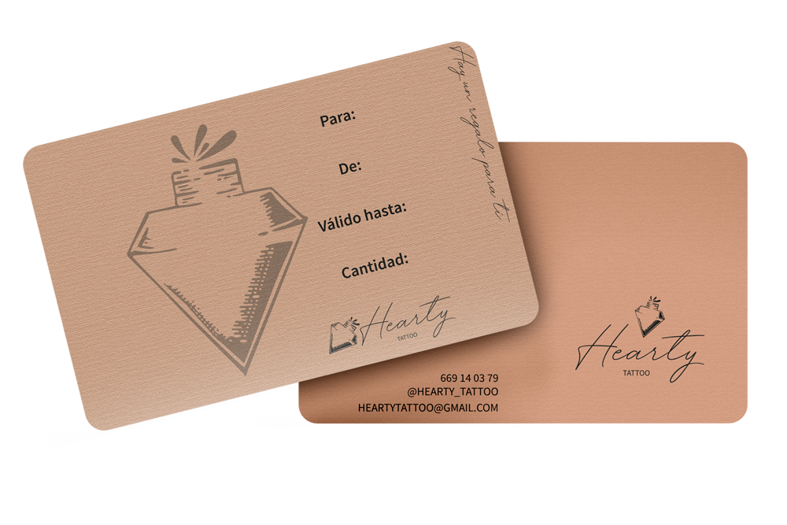

Descubre la pasion que late bajo la piel en Hearty Tattoo.
Conoce nuestros trabajos¡Regala arte y pasión con nuestra Tarjeta de Regalo!
El regalo perfecto para los amantes del tatuaje. Sorprende a tus seres queridos con la oportunidad de llevar consigo una obra maestra personalizada en su piel. Ya sea para una ocasión especial o simplemente para hacerles sonreír, nuestra Tarjeta de Regalo les abrirá las puertas a un mundo de creatividad y autenticidad. ¡Permite que sus historias se conviertan en arte inmortal con la Tarjeta de Regalo de Hearty Tattoo!
Consigue tu tarjeta regalo
